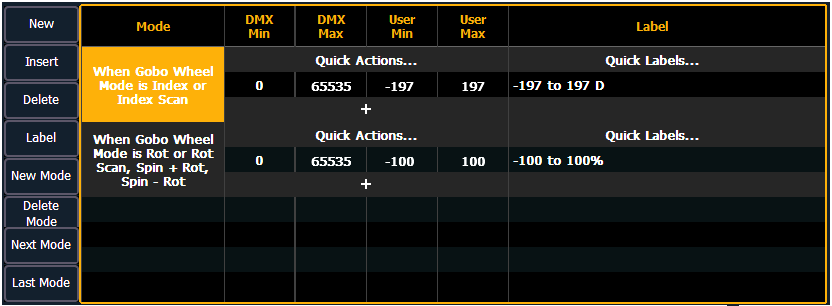
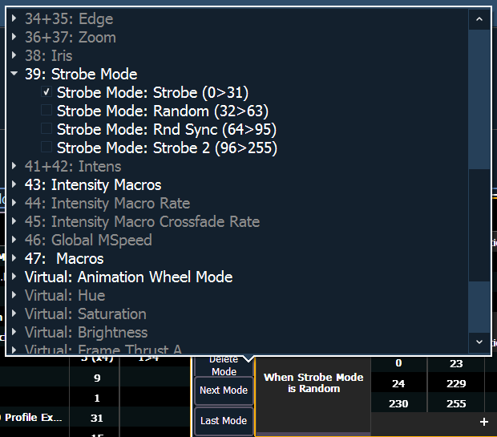
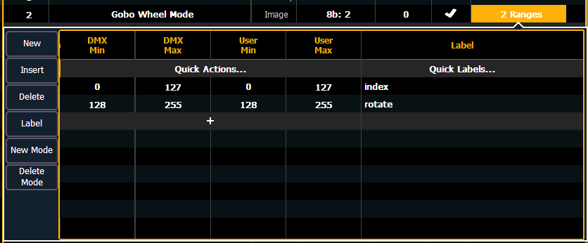
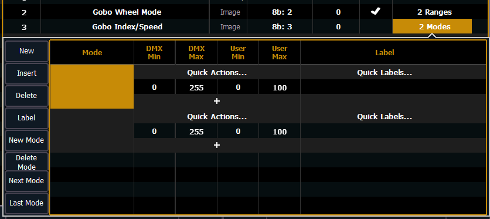
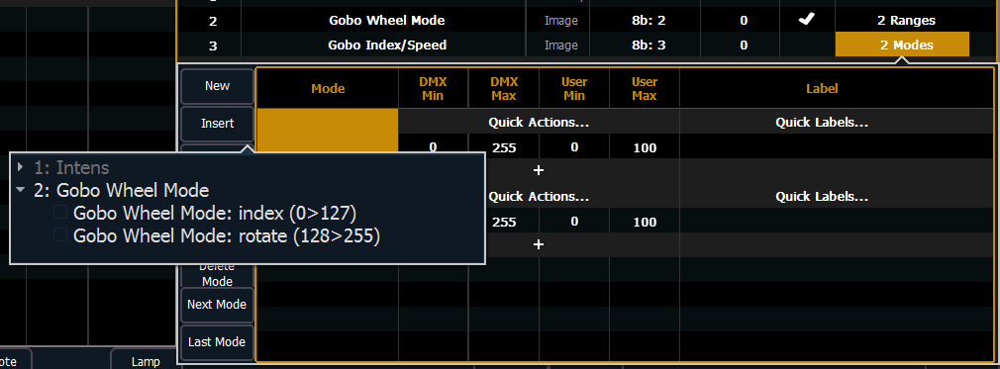
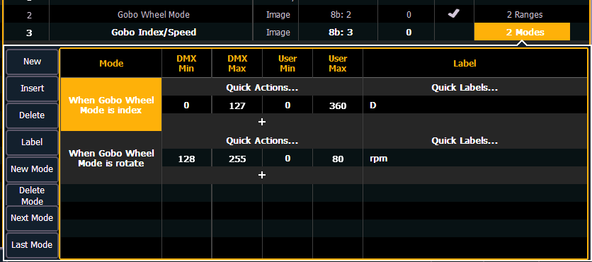
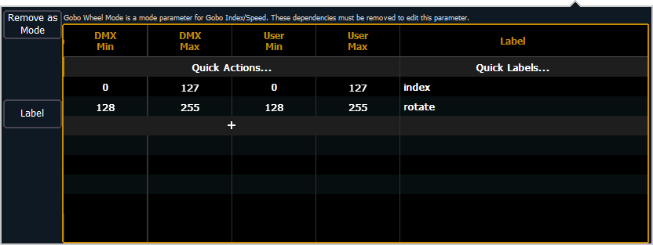
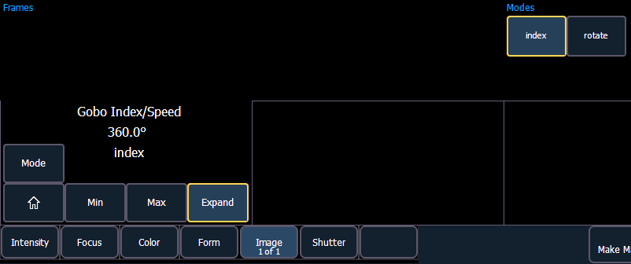

A mode is a collection of ranges that will display in the encoder display and in ML controls when the mode's conditions are true. These ranges are part of one DMX address that is used to control two or more different by related functions, such as gobo index and rotate.
Examples of mode conditions are "When Gobo Mode is Indexed" or "When Strobe Mode is Random". Multiple conditions can be assigned. An example of this would be "When Gobo Wheel Mode is Index or Index Scan".

When viewing a fixture profile, the parameters that have modes will display the number of modes in the ranges column.
Note: When adding a new mode, you will need to first add the parameter that the mode needs to be associated with before you will be able to assign the mode. See Creating Modes .
Modes can be edited in the range editor. The following buttons are available for editing modes:
Clicking a new or existing mode will open the mode selection window.

This window displays all the possible conditions that can be applied to the fixture. The active ranges for the mode will already be selected with a checkmark.
A condition can only be present on a single mode. Similarly, if a parameter has multiple ranges, and it is selected as a condition for another parameter, all ranges need to be present on some modes of the fixture. For example, if gobo wheel has ranges of index, rotate, and shake, and you place index on a parameter for a mode, rotate and shake must also be used.
Once a parameter is used as a condition, it becomes read only. Only the labels for the ranges can be added/ edited.
Note: A single range parameter is not useful as a condition so those will not be available for selection.
Note: Some fixtures use virtual modes. Those are modes without a DMX address assigned to them.
Let's take a look at how to create modes for a gobo wheel. This gobo wheel can be indexed or rotated.
In the fixture's manual, you will see something similar to this:
| 16 | Gobo Function |
|
The sixteenth DMX slot for this fixture is gobo function, which has two ranges for index and rotate.
In the fixture editor, you assign a parameter as gobo wheel mode. Click in the range column to open the range editor. Use {+} to add a second range slot. Assign the appropriate range values, and label each range.
Note: For this example, the DMX min and max values were entered and then the Quick Action of Matched was used so the user values were the same as the DMX ones.
Note: It is important to name your ranges. Without labels, only the range values will display when selecting conditions, and the mode buttons in the encoder display and ML controls will be blank.

Back in the fixture editor, assign a parameter as gobo index/speed. Click in the range column to open the range editor. Press {New Mode} to create two modes.

Click in the mode cell to open the mode selection window.

This window will display all possible conditions that can be applied to your fixture. In this case, there are only two possible.
If a parameter has multiple ranges and is selected as a condition for a mode parameter, all the ranges for that parameter must be used. The fixture editor will allow you to select a condition for a mode and it will automatically place the other range(s) on the next mode.

Assign the DMX and user values. The range values were used for the DMX values. For index, the user values were set to 0-360 degrees. The quick label for degree unit was used so the degree symbol will display in the encoder display. For rotate, the user values were to 0-80 rpms.
Once the modes are created using the index and rotate ranges, the gobo wheel mode parameter will be read only. The range editor for gobo wheel mode will give an advisory saying which mode the ranges are used in. If changes are needed to those ranges, press {Remove as Mode} in the range editor. After the changes are made, you will need to reassign the modes.

After patching the new fixture, you will be able to check your modes in the encoder display and ML controls.
There are now buttons for the modes, and for index, the degree symbol is displayed with the user value.
